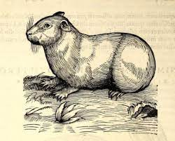

Oorsprong van de Cavia
Vroeger leefden cavia's onder andere in Panama en Suriname. Verschillende Zuidamerikaanse Indianen, waaronder de Inca's, hielden al cavia's als huisdieren. Ze fokten ze voor het vlees, de huid en het bont en gaven ze mee aan de doden in hun graf. Maar ze offerden ze ook aan de goden, zoals de Quetschua deden - vooral bruin-bonte en wit-bonte dieren werden aan de Zonnegod geofferd. Er zijn ook gemummificeerde cavia's gevonden in Inca nederzettingen en graftomben, evenals geraamten en stukken huid..
De eerste Europeaan die de cavia beschreef, was Konrad Gessner, een Zwitserse universiteitsgeleerde, die baanbrekend werk heeft verricht op diverse gebieden. Een van zijn werkterreinen was de natuur en in zijn Historia Animalium (sommigen maken melding van het Tierenbuch, maar dit is een verkorte uitgave van de Historia Animalium) beschreef hij de cavia.
Gessner's beschrijving komt vrijwel overeen met hoe de hedendaagse cavia er uit ziet: Ze hebben kleine oortjes die bijna onbehaard zijn. Ze hebben tanden zoals de muizen, maar geen staart. Ze hebben verschillende kleuren. Het stemgeluid doet denken aan dat van een biggetje. Ze eten allerlei soorten kruiden, fruit, brood en haver, maar ze drinken niet veel. Ze laten zich zo met de hand oppakken en ze bijten nooit. Alleen had hij het niet over de cavia, maar over 'Indiaanse konijntjes', de naam die de Spanjaarden aan de cavia gaven. De Italiaan Ulissi Aldrovandi, tijdgenoot van Gessner, en ook een universiteitsgeleerde, beschreef de cavia's rond dezelfde tijd.